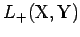
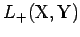
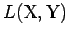
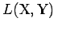

Inhalt Index DeskTop Bronstein

 Funktionalanalysis Stetige lineare Operatoren und Funktionale Lineare stetige Operatoren in Banach-Räumen
Funktionalanalysis Stetige lineare Operatoren und Funktionale Lineare stetige Operatoren in Banach-Räumen


Der Satz von KREIN und LOSANOWSKIJ macht eine Aussage über die Stetigkeit positiver linearer Operatoren.
Sind  und geordnete normierte Räume, wobei
und geordnete normierte Räume, wobei  ein erzeugender Kegel ist, dann ist die Menge  aller positiven linearen und stetigen Operatoren
ein erzeugender Kegel ist, dann ist die Menge  aller positiven linearen und stetigen Operatoren  , d.h. , ein Kegel in . Dann besagt der Satz von M.G. KREIN, G.J. LOSANOWSKIJ (s. Lit. 12.20): Sind
, d.h. , ein Kegel in . Dann besagt der Satz von M.G. KREIN, G.J. LOSANOWSKIJ (s. Lit. 12.20): Sind  und
und  geordnete BANACH-Räume mit abgeschlossenen Kegeln
geordnete BANACH-Räume mit abgeschlossenen Kegeln  und und erzeugendem , dann folgt aus der Positivität eines linearen Operators seine Stetigkeit.
und und erzeugendem , dann folgt aus der Positivität eines linearen Operators seine Stetigkeit.